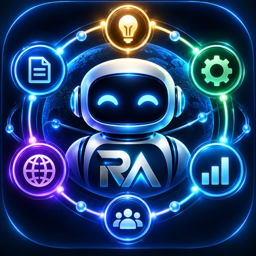
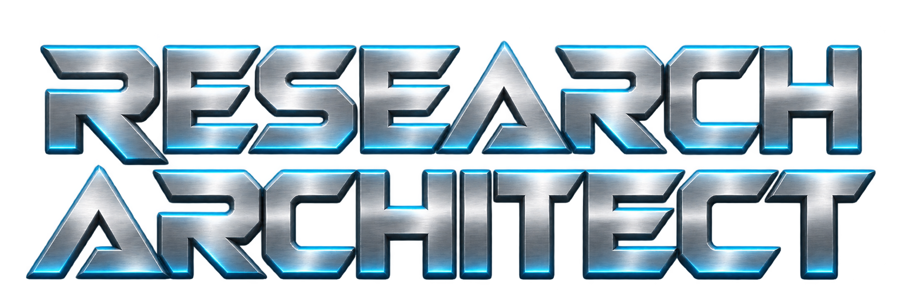
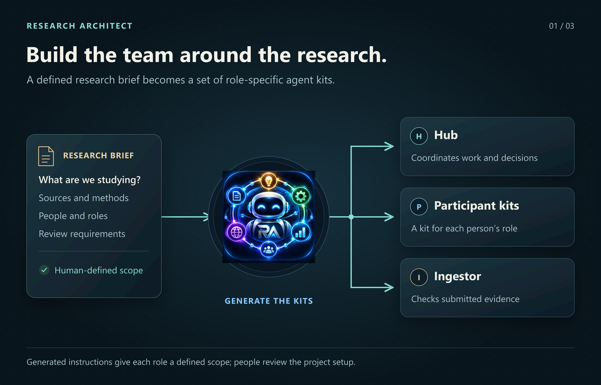
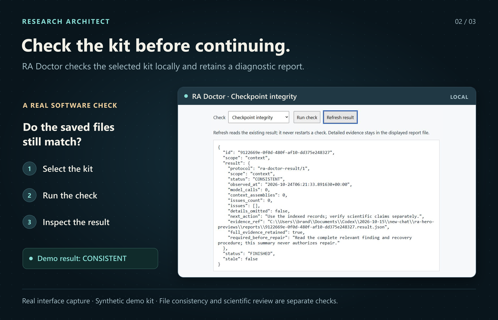
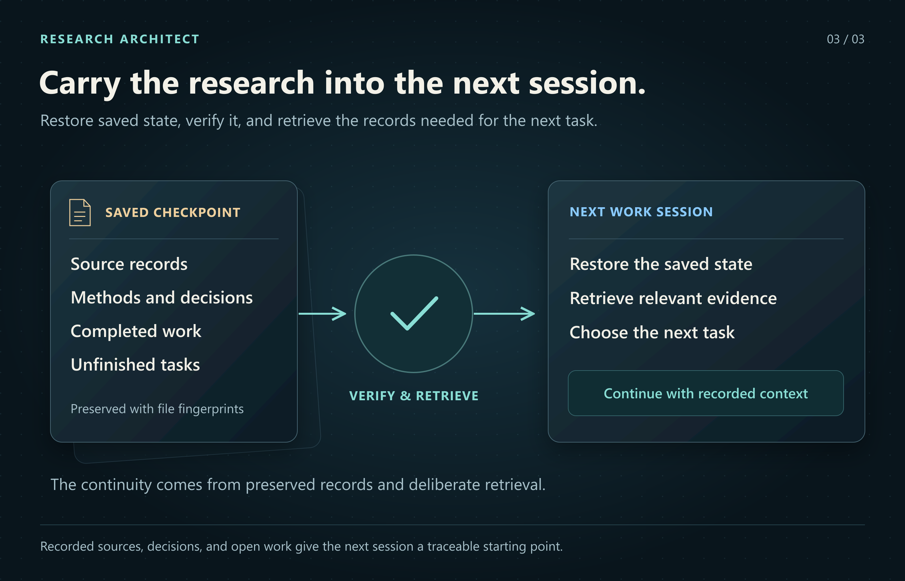
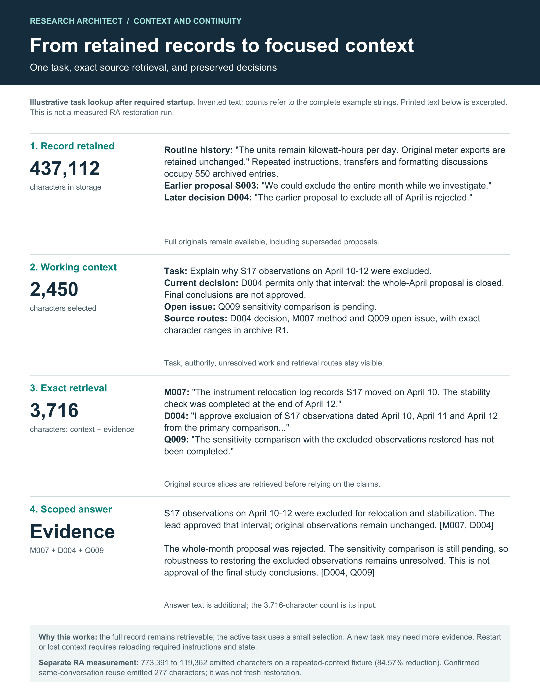
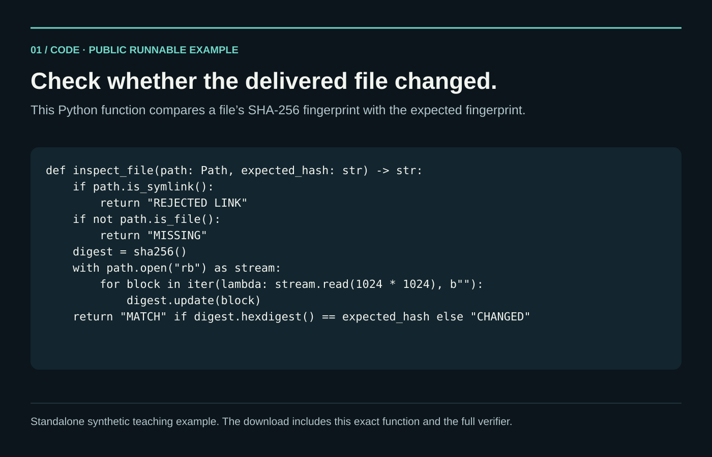
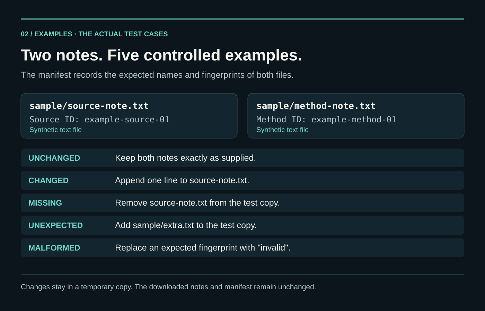
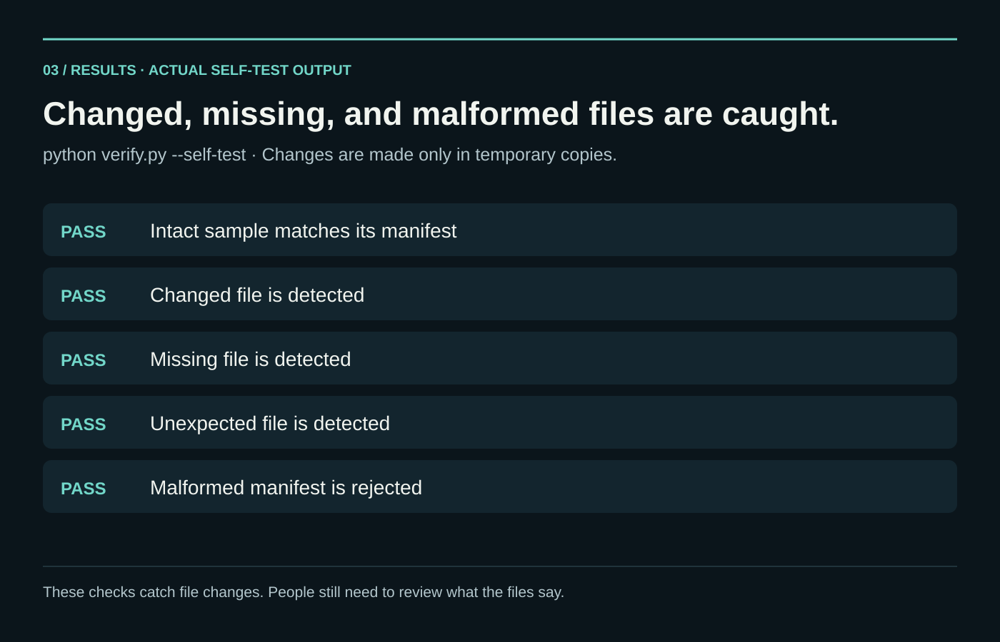

Shared team plan
Research purpose, questions, responsibilities, and setup checklist in a five-page example.
Open team plan · PDF ↗

I built Research Architect to help a research team keep its individual AI assistants working from the same agreed plan. It creates a kit of instructions, reference material, and working tools for each participant’s assistant. Each kit defines the job and how work should be checked and shared. The team approves the written plans before kit creation, and saved records preserve its sources, decisions, and unfinished work.
I created this under PhalAInx, my independent software studio.
Project at a glance ↓


I built Research Architect for human teams whose members work with their own AI assistants. A research plan can otherwise become scattered across separate conversations: one person knows why a method was rejected, another has a corrected source, and a new session starts without either. RA gives the team a recorded plan, defined responsibilities, and a way to preserve and review the work they exchange.
I built the Python generator that creates the kits, the tools that save setup decisions and produce written plans, and the checks that detect changed files. I also built ways to retrieve shared sources and recover work after interruptions. I used RA to establish the New World Screwworm research coordination system and helped eight people join it. The Spatial Evidence Workbench is my separate mapping and evidence-review application.
The coordinator’s kit, called the Hub, manages assignments, decisions, and the shared Library. Each participant receives a Spoke kit with their role, methods, first task, and the work they depend on. A separate checking role, the Ingestor, examines submissions and repeats agreed steps when needed. People review the work before the Hub publishes accepted material to the Library. Other roles can read approved material and propose changes.
A team can repeat the same mistake if everyone starts from someone else’s answer. I built review instructions into the Hub, participant, and Ingestor kits that require an assistant to save and verify its first assessment before seeing another participant’s work. The Hub controls what is shared and when.
Later revisions remain linked to that first assessment, with a record of what the assistant had already seen. This lets the team compare reasoning, preserve disagreements, and inspect why an interpretation changed. People still decide which findings to accept.
I added a setup check because instructions alone cannot make an unsuitable chat environment preserve a research project. Before planning can proceed, the assistant must write a test file in its working folder, and a separate Python process must reopen and verify it. The operator also confirms that the assistant is running in a local workspace whose files will remain available.
RA stops setup and kit creation when that evidence is missing or no longer matches the workspace. Ordinary browser-only chat and temporary file storage do not meet these requirements. Each teammate still needs a walkthrough on their own machine; checking the setup computer does not check everyone’s installation.
I built a check that ties approval to the actual documents the project lead reviewed. RA produces a team plan and a coordinator plan and records that decision. If either plan changes or approval is withdrawn, kit creation stops until the current documents are approved. The kits receive the same files that were reviewed.
I built saved checkpoints: records of the project’s sources, methods, decisions, and unfinished work at a particular time. The tools find the latest checkpoint, check its files, and retrieve the records needed for the next task. RA Doctor provides a local interface for checking a kit and saving the results without calling an AI model.
After an interruption, the records distinguish finished work from failed tasks and outcomes that remain unknown. Version checks and recovery copies help prevent an update from losing earlier work. The original evidence, corrections, and decisions about closing a task remain available for review.
I built context recovery so an assistant can find the decisions and sources needed for its task without repeating the whole project history. This example follows a question from a saved record to a focused working context, then back to the exact evidence used in the answer.
Invented building-energy study · task lookup after required startup. These character counts describe this illustration, not measured RA compression or all the context needed to start a session.
Both bars use the same scale. The full original record stays available in every step.
Reload the required instructions, identity, current decisions, and task state. Check the selected source versions again and retrieve the evidence needed for the task. A saved index or a successful file check does not mean the assistant has read or retained that material.
The invented example retains 437,112 characters, selects 2,450 for this task, and uses 3,716 after retrieving the exact evidence. A small task packet does not retain all project information.
A separate measured repeated-context fixture reduced emitted text from 773,391 to 119,362 characters (84.57%), with reconstruction of the selected source text verified. The 277-character reuse result applied only when the required context was already present in the same conversation; it was not a fresh restoration.
Selecting relevant material, avoiding exact repetition, and reusing context already present are different mechanisms. This illustration demonstrates task-specific lookup.

I built RA around a research methodology knowledge base that supports the full research workflow: framing questions, understanding domain context, choosing study designs, planning measurement and data collection, addressing bias, selecting analyses, weighing evidence, reproducing results, and recording human review. It combines foundational guidance, domain-specific methods, specialist chapters, worked study designs, and curated research literature. Teams can retrieve deeper material when a task calls for it.
Its guidance supports experiments, observational studies, surveys, qualitative and mixed methods, evidence reviews, and statistics.
Eight foundational guides connect research questions to measurement, sampling, analysis plans, uncertainty, evidence synthesis, reproducibility and review. For example, two laboratories may report the same measurement in different units, while one file uses zero for values below a detection limit. The guidance helps a team define its variables, preserve those flags and plan a defensible comparison before pooling the data. It also asks who or what is being sampled and what conclusions that sample can support.
The 41 domain guides put those questions into disciplinary settings. In GIS and remote sensing, neighboring pixels can make a random validation split look more accurate than it will be in a new region. In planetary observations, an apparent brightness change may come from viewing geometry or instrument conditions. In survey research, thousands of mailing-list responses can still miss people outside that list. These examples connect collection conditions and domain assumptions to the interpretation of results.
Forty-one method-routing modules help the Architect select the material relevant to a project's question and design. A project combining interviews with measured outcomes may need mixed-methods guidance; a study with repeated observations at the same sites needs attention to dependence; a prediction task needs an evaluation design that matches where and when it will be used. The routes connect the base method to domain guidance, specialist chapters, references and worked examples, so a kit carries a reasoned selection rather than the whole collection by default.
The 39 specialist guides address choices that a general checklist cannot settle. Examples include Bayesian model checking, hierarchical and repeated-measures analysis, missing-data sensitivity, causal inference, time-to-event analysis and generalizing a result to a different population. The multi-agent chapters examine paired task evaluation, cost, reviewer calibration and correlated errors. For instance, three agents repeating one underlying study are not three independent sources of evidence; a reviewer preserves an initial assessment before an authorized comparison.
The curated registry contains 148 source records, including 38 locally readable reference texts totaling about 798,000 words with bibliographies. The other 110 records retain source information and retrieval routes. Examples include statistical reference material, NIST measurement-uncertainty guidance, FAIR data and provenance principles, and research on study design and evidence appraisal. These sources supply original methodological grounding alongside RA's own explanations, with edition, availability and recorded inspection scope kept visible.
Twenty-one source appraisals explain what a publication supports, which sections were inspected, the assumptions that matter and how its findings apply to a research decision. For example, an agent-evaluation paper can inform paired tasks and cost accounting without deciding which model is best for every project. Clustered-inference guidance directs attention to independent projects, schools or sites instead of treating every row as another independent observation. The appraisal connects the original source to a concrete verification action.
The 41 worked design examples make methodological consequences concrete. A study with forty pupils in each of twenty schools has 800 rows but only twenty school-level treatment assignments. An experiment run in a fixed order can confuse an effect with instrument drift. Interviews with twelve volunteers can reveal experiences and contrary cases without estimating the percentage of an entire population that shares a view. Each example connects the question, design choices, source guidance and checks needed before drawing the intended conclusion.
Three complete runnable cases use invented data to demonstrate paired workflow evaluation with failures and costs, nested model selection that keeps preprocessing inside the evaluation boundary, and transferring an effect to a population with a different composition. A separate semantic-data example shows how ambiguous joins multiply rows and why unlike units, missing observations and recorded zero need separate treatment. The cases retain their plans, inputs, calculations, diagnostics and expected results so the reasoning can be inspected and reproduced.
The bias and safeguards map retains 29 control options and a separate catalog of 274 literature and guidance records. Examples include tracing several publications back to one underlying study, preserving an independent first assessment, controlling when an expected answer is revealed, examining sampling coverage and testing sensitivity to assumptions. The catalog connects those options to research, reported inspection and applicability notes. It overlaps the curated registry, so the two counts remain separate. Investigators select controls for the actual design rather than adding every procedure to every task.
Four templates extend the existing task and review records. Data semantics records units, dates, missing codes and join rules; claim concordance connects an exact statement to its calculation, source and qualifications. A source-change record identifies claims affected by a correction or replacement, while safeguard evaluation records useful corrections, missed errors, false alarms and review effort. These records preserve the evidence and the human decision instead of turning a completed checklist into approval.
Seven retained operational cases connect the methodology collection to documented Hub and participant workflows. They cover scoped message handling, fresh-session context restoration, reuse of context already retained in a conversation, technical intake and selective retrieval that preserves source hashes. For example, a routine message check can use its compact route, while a fresh research session reconstructs the required pinned context. The cases preserve the checkpoint, measured output scope and execution evidence for each result.
Its deeper guidance covers causal inference, Bayesian and hierarchical analysis, missing data, uncertainty, and evaluating multi-agent systems. Specialized routes extend those foundations to planetary science and astrobiology, GIS and remote sensing, geochronology and geophysics, computational omics, and AI and machine learning. Each project still needs sources suited to its own scientific question.
Each role kit also includes local checks that help researchers describe what their data means: units, dates, missing values, denominators, and how tables connect. Other checks compare final statements and quotations with their recorded sources. When required data definitions fail, dependent claims are blocked for review. People interpret the evidence and decide what to accept.
The illustrated white paper explains RA’s design and how I used it to coordinate an eight-person New World Screwworm project over eight weeks. The case study follows sources, reviewed contributions, and corrections into the 136-page briefing completed at the time. The project has since produced an expanded research briefing of more than 150 pages. The paper also includes research references and records of the engineering checks.
The project Library is the team's governed research record, separate from RA's methodology knowledge base. It keeps accepted findings, methods, source histories, files, dependencies, and corrections together with their approved audiences and uses. The Hub manages publication and corrections; other roles can read material within their approved access and request information about held work.
Reviewed updates reuse unchanged catalog records instead of rebuilding the entire collection. Each role's setup records its Library topic, status, owner, and next action. The team still configures the Library's storage, access, and connection before using it.
I designed RA so useful work from one participant and their assistant can improve the context available to the whole team. A correction, finding, or method goes through the project’s review process. After the Hub accepts it and publishes it to the Library, other kits can retrieve and apply that accepted material in later work.
This creates an iterative learning process: a correction accepted from one participant can inform the next task elsewhere in the team. The Library retains the evidence and the decision, and each assistant can retrieve the relevant records when it needs them. The team’s recorded knowledge grows through reviewed work; each participant and assistant still has to read and apply it.
RA builds kits from a reviewed plan for the whole team. Each kit records its participant, assigned role, research methods, and the other members it exchanges work with. The generated project also connects those identities to handoff routes and Library settings. These records are prepared together, so a new kit needs a defined place in that arrangement.
Adding someone later would require revising the team plan, giving the new member a distinct identity and assignment, and updating the affected directories, handoffs, and Library connections. Those changes would then need to reach the kits already in use without losing their current work or review history. The current generator creates a new project in a new folder; it does not perform that coordinated update to an active team. Producing another kit therefore leaves the integration work unresolved.
Copying a kit already in use carries over the existing participant’s recorded identity, role, instructions, and saved history. It produces another copy of that member’s workspace. Renaming the folder does not create a distinct participant, and changing its identity alone does not update the rest of the team. The saved records still need to preserve who did the earlier work and which decisions applied to it. Reuse therefore requires reconciling the same connected records; it is not a practical shortcut around integration.
The shared Library preserves the team’s learning, but a late addition still needs the right current context for its role: which findings have been accepted, which approaches were rejected, what remains unresolved, and which other work its assignment depends on. The participant and assistant need to interpret and apply that context together. The unresolved workflow is how to integrate the new member and prepare and review that role’s current context while the team continues working.
I built RA to keep sources and decisions available for review. File checks can show that the expected documents arrived unchanged. Assessing whether someone understood those documents, or whether a scientific conclusion follows from them, still takes people reviewing the work.
Research Architect is developed under PhalAInx, my independent software studio. High Command is the separate application for one person coordinating multiple models and projects.
I designed setup so the team can read and review how the project will work. It saves answers and unfinished decisions between sessions, then produces a shared team plan and a more detailed coordinator plan.
Research purpose, questions, responsibilities, and setup checklist in a five-page example.
Open team plan · PDF ↗The shared design plus records and setup details for the coordinator in a ten-page example.
Open Hub plan · PDF ↗These draft plans use an invented project and include unanswered setup questions. They show what RA produces before a real team approves its plans.
I tested missing tools, missing files, changed plans, and withdrawn approval to check that RA stops kit creation when it should. I also checked that completed kits contain the documents the project lead approved.
Current package: factory 2.6.1 preview, distribution revision 1; operational runtime 2.4.0; scientific library 1.9.
I tested eight groups of setup failures, including missing or failed file checks, changed workspaces, and withdrawn confirmation. A four-role build kept the existing approvals and included the workspace-check record; another stopped when that record changed during generation. These tests used simulated confirmations without AI calls. They checked setup, not the earlier research or full runtime behavior. The person setting up RA still needs to confirm that the local files will remain available.
I checked the path from plan review to kit creation in eleven groups of tests, plus five checks of refused and renewed approval. A four-role build delivered the approved PDFs even with PDF generation disabled, confirming that it copied the reviewed files. Changing a PDF stopped publication. I used simulated approval responses for these checks; this pass did not rerun the earlier PDF-generation, runtime, scientific, or AI-conversation tests.
Before RA creates the team’s assistant kits, the project lead must approve the written plans. If those plans change or approval is withdrawn, kit creation stops until the current documents are approved. Each kit receives the appropriate approved documents. Existing teams and their past decisions remain unchanged. Read the release notes ↗
Earlier trials exposed a startup problem: assistants sometimes missed a required file and found it only after searching the folder. I keep that limitation separate from the approval checks. A kit can contain the right files and still need a guided introduction before its participant and assistant can use them effectively.
How can a reviewer tell whether the files they received match the expected copies? This small Python example checks two invented research notes against a manifest, a list of expected filenames and digital fingerprints calculated with SHA-256. It demonstrates how changed, missing, and unexpected files are detected.
I created this small example so you can inspect and run the file-checking method without installing RA. Matching fingerprints show that the file contents agree with the expected copies. Reviewing the authorship, findings, and approval remains a separate task.

The exact Python function included in the download, with the full verifier available above.

Five cases exercise the two sample notes and manifest. Each change uses a temporary copy.

All five checks passed when the downloadable example ran. The results are typeset for readability.
Read the captured output ↗handoff-integrity folder. Python 3.10 or newer is the only requirement.python verify.py. The intact example reports that both files match the manifest.python verify.py --self-test. Five checks exercise intact, changed, missing, unexpected, and malformed inputs using temporary copies.This is the same function included in the download. The full script also checks the manifest structure and expected file list.
def inspect_file(path: Path, expected_hash: str) -> str:
if path.is_symlink():
return "REJECTED LINK"
if not path.is_file():
return "MISSING"
digest = sha256()
with path.open("rb") as stream:
for block in iter(lambda: stream.read(1024 * 1024), b""):
digest.update(block)
return "MATCH" if digest.hexdigest() == expected_hash else "CHANGED"Keep an expected manifest from a trusted handoff. Replacing both a file and its manifest can produce a new matching pair. Read the scope and instructions ↗
Explore each stage of the work.
Record what the study asks, what evidence it needs, what it will produce, and who will review the work.
Configure each participant’s AI assistant with its research role, methods, source context, dependencies, and handoff responsibilities.
Compare findings with their sources, keep conflicting evidence visible, identify gaps, and have people review the conclusions.
Load the current saved project state, check the expected files and their SHA-256 fingerprints, publish the reviewed update, and keep a recovery copy.